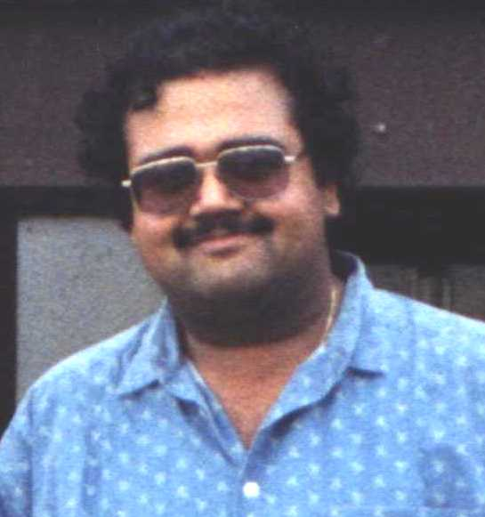

B. Ravindran
Assistant Professor
Research Areas: Reinforcement
Learning, Machine Learning, Hierarchical Learning
Architectures, Developmental Models of Learning, Model Minimization,
Relational Learning, Information Filtering, Knowledge Representation
and Generalization.
- Education:
- Ph.D., Computer Science, University of Massachusetts, Amherst, 2004
- M.Sc.(Engg.), Computer Science and Automation, Indian Institute of Science, Bangalore, 1996
- B.E., ECE, Madurai Kamarajar University, 1993
Contact Information:
BSB 314
Department of Computer Science and Engineering
Indian Institute of Technology Madras
Chennai - 600 036
Ph: +91-44-2257 8357
Fax: +91-44-2257 8352
E-mail: ravi AT cs.iitm.ernet.in
Publications
- Ravindran, B. (2004) "An Algebraic
Approach to Abstraction in Reinforcement Learning". Doctoral
Dissertation, Department of Computer Science, University of
Massachusetts, Amherst MA.
- Ravindran, B. and Barto, A. G. (2003) "Relativized Options: Choosing the Right
Transformation". In the Proceedings of the Twentieth
International Conference on Machine Learning(ICML 2003), pp.
608-615. AAAI Press.
- Ravindran, B. and Barto, A. G. (2003) "SMDP Homomorphisms: An Algebraic Approach to
Abstraction in Semi Markov Decision Processes". To appear in the
Proceedings of the Eighteenth International Joint Conference on
Artificial Intelligence (IJCAI 03), pp. 1011-1016. AAAI Press.
- Ravindran, B. and Barto, A. G. (2003) "An Algebraic Approach to
Abstraction in Reinforcement Learning". In the
Proceedings of the Twelfth Yale Workshop on Adaptive and Learning
Systems, pp. 109-114. Yale University.
- Ravindran, B. and Barto, A. G. (2002) "Model Minimization in Hierarchical Reinforcement
Learning". In the
Proceedings of the Fifth Symposium on Abstraction, Reformulation and
Approximation (SARA 2002), pp.196-211, LNCS, Springer
Verlag. (Slides from presentation: IE, Netscape, PPT)
- Ravindran, B.
and Barto, A. G. (2001) "Symmetries and Model Minimization of Markov
Decision Processes". Computer Science Technical Report 01-43,
University of Massachusetts, Amherst, MA.
- Sutton, R. S., Singh, S., Precup, D. and Ravindran, B. (1999) "Improved
Switching among Temporally Abstract Actions". In
Advances in Neural Information Processing Systems 11 (Proceedings of
NIPS'98),
pp.1066-1072. MIT Press.
- McGovern, Amy ,
Precup, Doina,
Ravindran, B.,
Singh, Satinder and
Sutton, Richard S.
(1998) "
Hierarchical Optimal Control of MDPs", Proceedings of the
Tenth Yale Workshop on Adaptive
and Learning Systems, pp.186-191.
- Ravindran, B. (1996) "Solution of Delayed Reinforcement
Learning Problems having Continuous Action Spaces",
Master's Thesis, Department of Computer Science and Automation,
Indian Institute of Science, Bangalore, India.
- Keerthi, S. S. and Ravindran, B. (1996) "C3: Reinforcement Learning".
In Handbook Of Neural
Computation, E. Fiesler and R. Beale,
Editors, Oxford University Press, U. K.
- Keerthi, S. S. and Ravindran, B. (1994) "A
Tutorial Survey Of Reinforcement Learning". In
Sadhana (Proceedings of the Indian Academy of Sciences), Vol. 19, Dec.
1994, pp. 851-889.